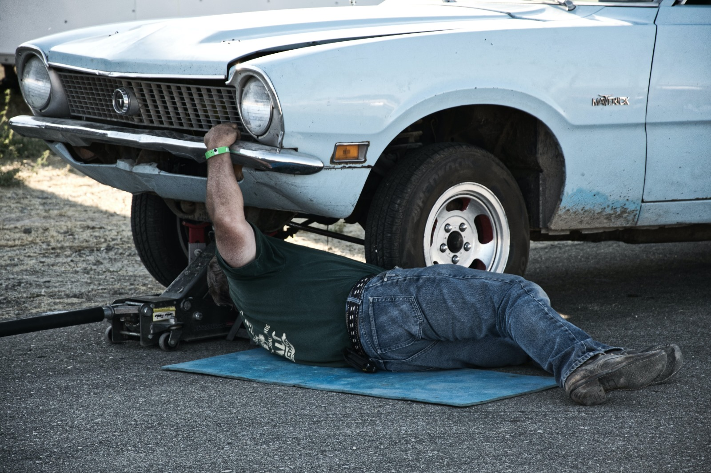

Skriveni Svijet Auto Otpada
Početak
Auto otpad, poznat i kao groblje vozila, predstavlja fascinantan svijet recikliranja i ponovne uporabe.
Na tim lokacijama starih vozila, stručnjaci razlažu i recikliraju dijelove, čime pridonose održivosti i smanjenju otpada. Otpadne gomile vozila postaju izvor vrijednih resursa, a moderna tehnologija i napredna oprema igraju ključnu ulogu u procesu recikliranja.
Auto otpadi nisu samo prostor za odbačene automobile, već i vitalna karika u lancu očuvanja okoliša i ekonomskog oporavka.
Imamo svega, čak i mehanicara
- 